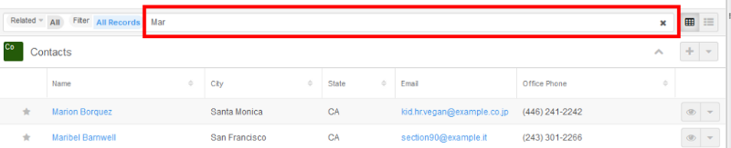

This tutorial should hopefully help you to create a new subpanel under the Contacts module in Sugar using a custom link class and driven by SugarCRM 7’s new SugarQuery API.
This should go into custom/modules//YourNewLink.php and this class will act as the custom functionality that will build your link between the two records.
/** * Custom filtered link */ class YourNewLink extends Link2 { /** * DB * * @var DBManager */ protected $db;
public function __construct($linkName, $bean, $linkDef = false) { $this->focus = $bean; $this->name = $linkName; $this->db = DBManagerFactory::getInstance(); if (empty($linkDef)) { $this->def = $bean->field_defs[$linkName]; } else { $this->def = $linkDef; } }
/** * Returns false if no relationship was found for this link * * @return bool */ public function loadedSuccesfully() { // this link always loads successfully return true; }
/** * @see Link2::getRelatedModuleName() */ public function getRelatedModuleName() { return ‘’; }
/** * * @see Link2::buildJoinSugarQuery() */ public function buildJoinSugarQuery($sugar_query, $options = array()) { $joinParams = array(‘joinType’ => isset($options[‘joinType’]) ? $options[‘joinType’] : ‘INNER’); $jta = ‘active_other_invites’; if (!empty($options[‘joinTableAlias’])) { $jta = $joinParams[‘alias’] = $options[‘joinTableAlias’]; }
$sugar_query->joinRaw($this->getCustomJoin($options), $joinParams); return $sugar_query->join[$jta]; }
/** * Builds main join subpanel * @param string $params * @return string JOIN clause */ protected function getCustomJoin($params = array()) { $bean_id = $this->db->quoted($this->focus->id); $sql = “ INNER JOIN(“; $sql .= “SELECT id FROM accounts WHERE id={$bean_id}”; // This is essentially a select statement that will return a set of ids that you can match with the existing sugar_query $sql .= “) accounts_result ON accounts_result.id = sugar_query_table.id”; return $sql; } }
The argument $sugar_query is a new SugarQuery object, the details of which are documented here. What you essentially need to do is extend this query with whatever join/filters you wish to add. This is done in the inner join I’ve specified.
Note: The inner join can get really complicated, so if you want a real working example, checkout modules/Emails/ArchivedEmailsLink.php and how the core sugar team use this. I can confirm however that this does work with custom joins.
Here is the getEmailsJoin to help you understand what you can actually produce via this custom join.
/** * Builds main join for archived emails * @param string $params * @return string JOIN clause */ protected function getEmailsJoin($params = array()) { $bean_id = $this->db->quoted($this->focus->id); if (!empty($params[‘join_table_alias’])) { $table_name = $params[‘join_table_alias’]; } else { $table_name = ‘emails’; }
return “INNER JOIN (\n”. // directly assigned emails “select eb.email_id, ‘direct’ source FROM emails_beans eb where eb.bean_module = ‘{$this->focus->module_dir}’ AND eb.bean_id = $bean_id AND eb.deleted=0\n” . “ UNION “. // Related by directly by email “select DISTINCT eear.email_id, ‘relate’ source from emails_email_addr_rel eear INNER JOIN email_addr_bean_rel eabr ON eabr.bean_id = $bean_id AND eabr.bean_module = ‘{$this->focus->module_dir}’ AND eabr.email_address_id = eear.email_address_id and eabr.deleted=0 where eear.deleted=0\n” . “) email_ids ON $table_name.id=email_ids.email_id “; }
For this example, I’m going to create the custom link on the contacts module. So this code goes in custom/Extension/modules/Contacts/Ext/Vardefs/your_field_name.php
$dictionary[“Contact”][“fields”][“your_field_name”] = array( ‘name’ => ‘active_other_invites’, ‘type’ => ‘link’, ‘link_file’ => ‘custom/modules//YourNewLink.php’, ‘link_class’ => ‘YourNewLink’, ‘source’ => ‘non-db’, ‘vname’ => ‘LBL_NEW_LINK’, ‘module’ => ‘’, ‘link_type’ => ‘many’, ‘relationship’ => ‘’, );
custom/Extension/modules/Contacts/Ext/clients/base/layouts/subpanels/your_subpanel_name.php
$viewdefs[‘Contacts’][‘base’][‘layout’][‘subpanels’][‘components’][] = array ( ‘layout’ => ‘subpanel’, ‘label’ => ‘LBL_NEW_LINK’, ‘context’ => array ( ‘link’ => ‘your_field_name’, ), );
custom/Extension/modules/Contacts/Ext/Language/en_us.new_link.php
Content:
$mod_strings[‘LBL_ACTIVE_OTHER_INVITES’] = ‘Your New Link’;
That should hopefully get you started. Keep an eye on the sugarlogs while you’re debugging your queries. I also found using xdebug and SugarQueries compileSql function invaluable in figuring out what I needed to do to get a working INNER JOIN statement.
I’ve found this to be a surprisingly powerful solution, it means that if you need to show information related to a module that might be a few joins away, this allows you to create the links manually without having to create pointless related fields in-between the two.
.. |sugar7subpanel| image:: /images/sugar7subpanel-1024x209.png